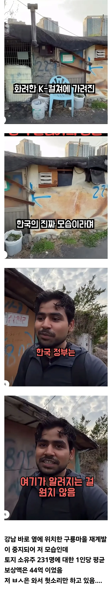

재계발
자기개발
신재품계발
능력개발
안알려지기 싫지
투기꾼들 껴서 피곤한데 더 껴봐
와꾸보니 인도 슬럼가에서 태어난거 같은데
서울 슬럼가 보고싶으면 아직남아있는 찐 달동네 많은데 부자동네가서 뭐함?
저기 보상금이면 너네나라 수도에 저택을 산다
저택 10개는 살듯
인도평ㅋㅋ
타국에서 고향스러운 풍경 봐서 반가웠나봄
이래야 조회수 잘빨린다고ㅋㅋ
옛날에 샀어야했는데
성범죄자같이생겼노
임마 존나 부자들이야
근데 왜 중지된거냐 빨리좀 처해서 저딴거좀 안보고 싶은데
못받은 사람이 버티겠지
영등포역 쪽방촌을 안가봤구만
챗지피티한테 한국에서 제일 슬럼가 알려줘 라고 치고 갔을듯
재계발이 뭐야 진짜 씨이발